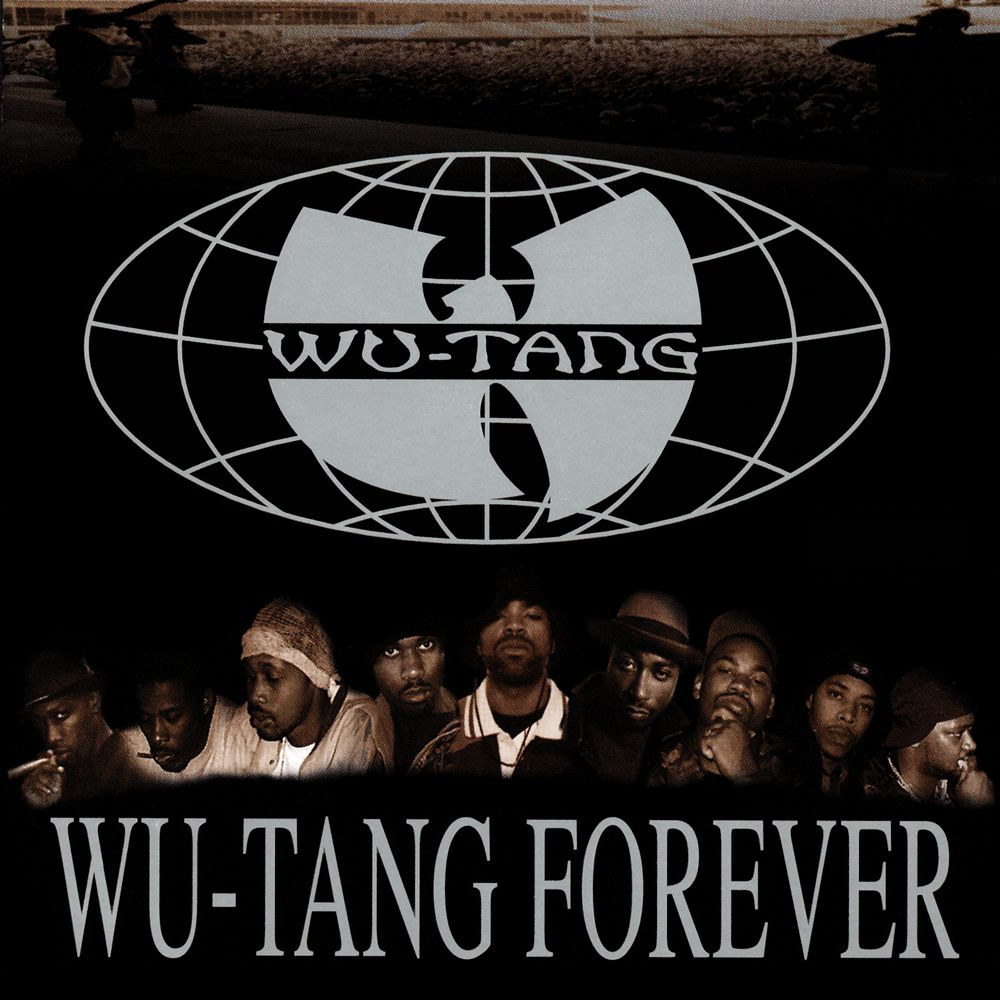
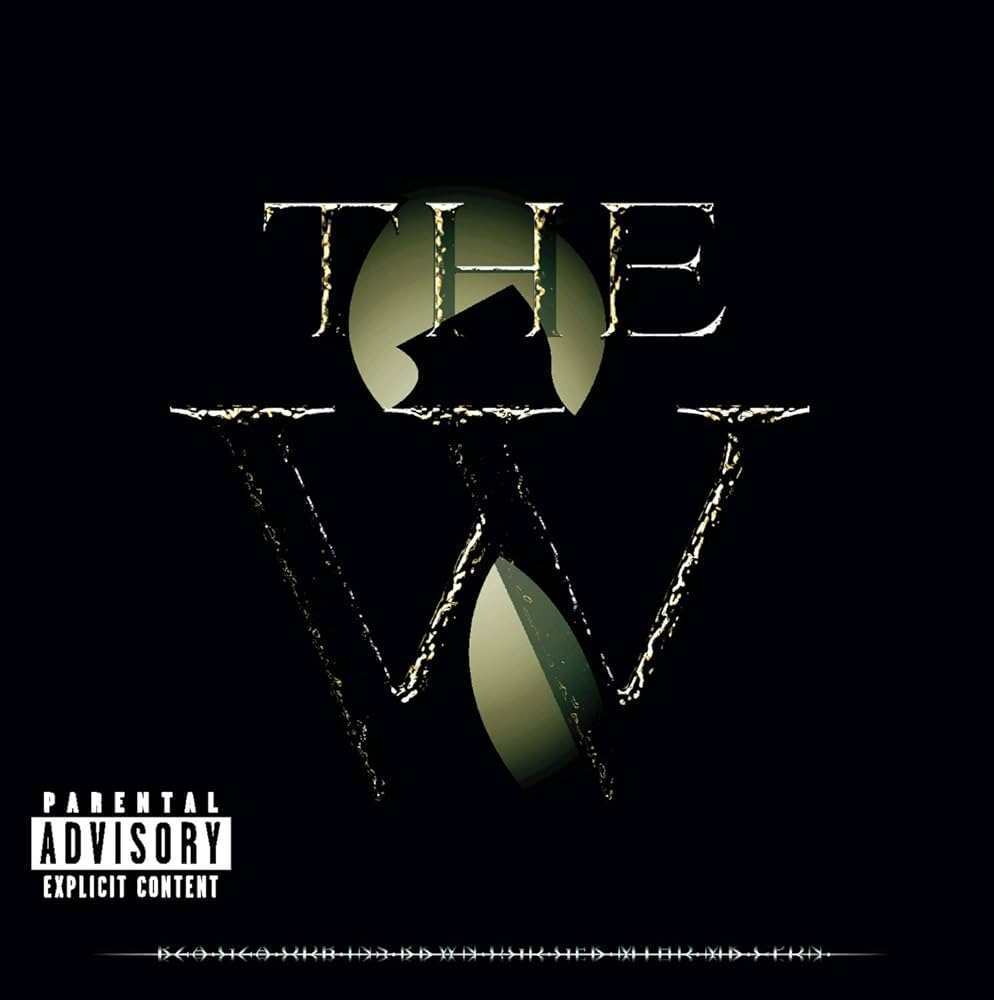
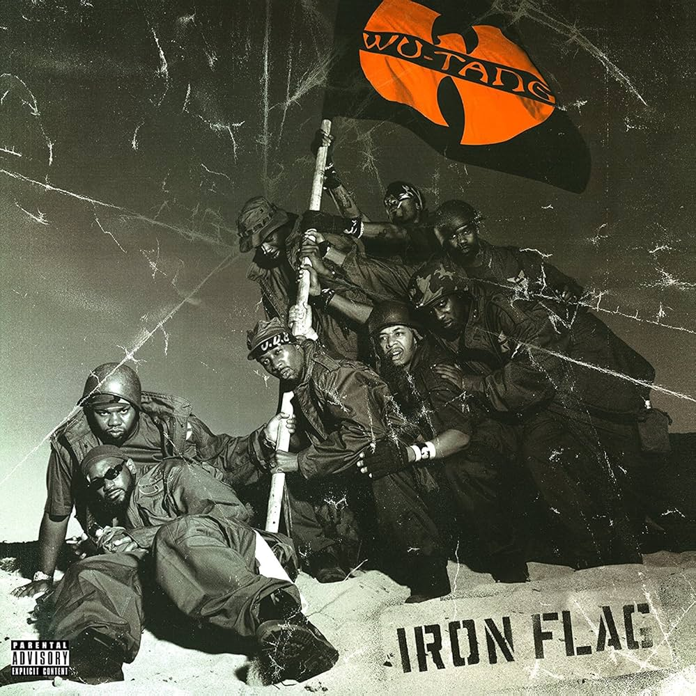
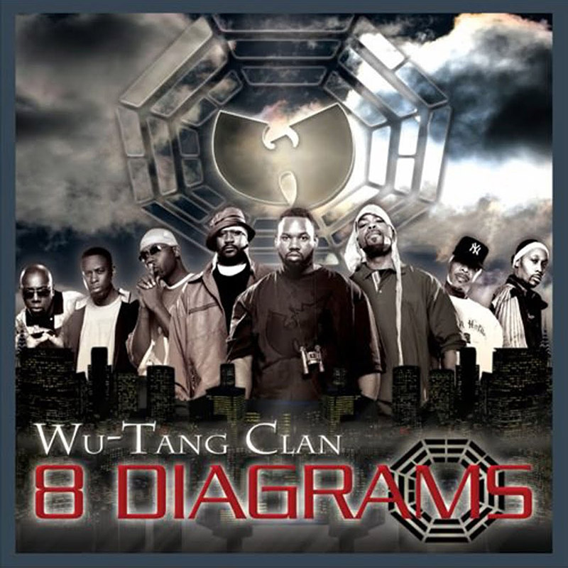
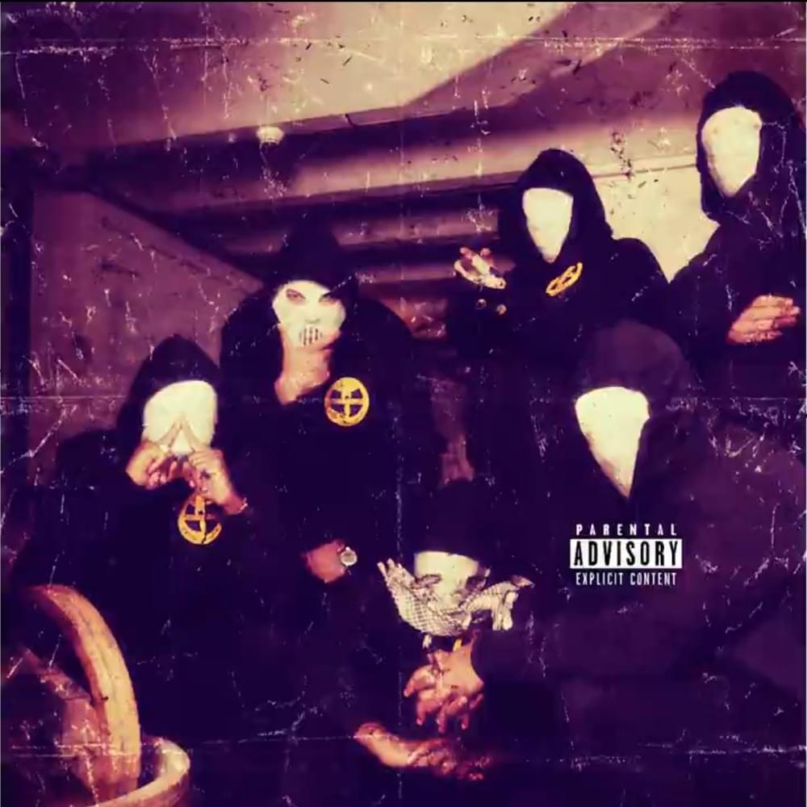
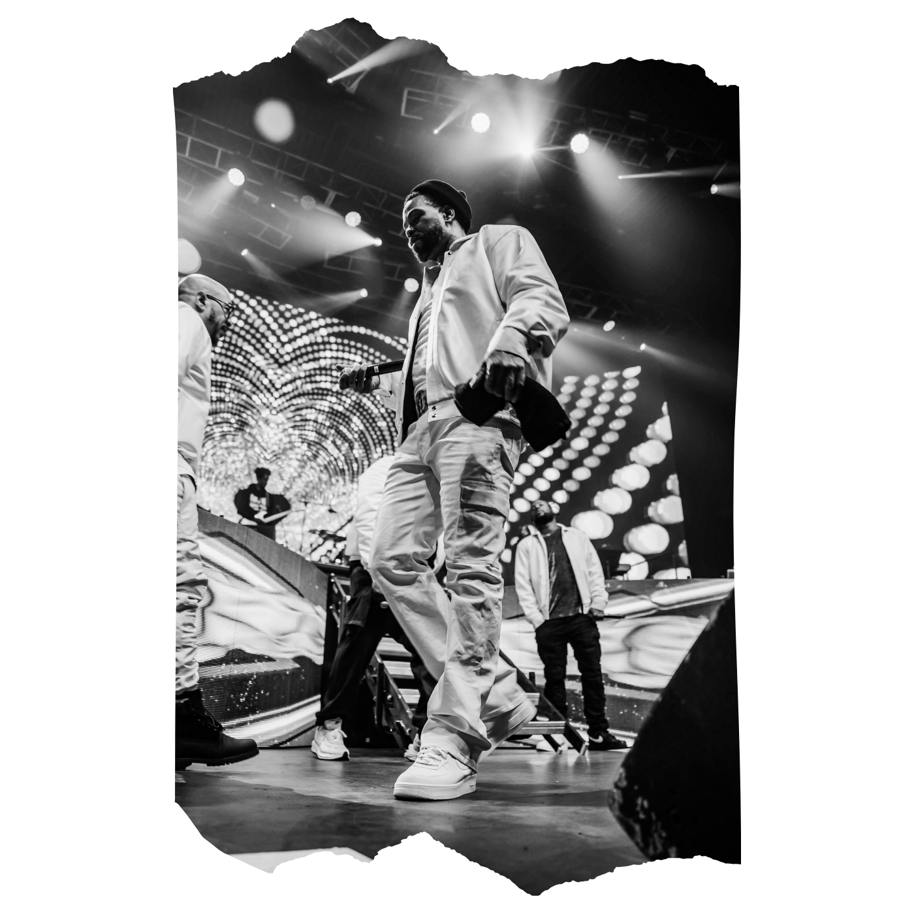

Enter the WU
Wu-Tang Clan are an American hip hop collective formed in Staten Island, New York City, in 1992. Its members include RZA, GZA, Method Man, Raekwon, Ghostface Killah, Inspectah Deck, U-God, Masta Killa, and, until his death in 2004, Ol' Dirty Bastard. Close affiliate Cappadonna later became an official member. They are credited for revitalizing East Coast hip hop and are considered one of the greatest hip hop groups of all time.
After signing to Steve Rifkind's label Loud Records in 1992, Wu-Tang Clan released their debut album Enter the Wu-Tang (36 Chambers) in 1993; initially receiving positive reviews, it has since garnered widespread critical acclaim and is widely considered to be one of the greatest hip hop albums of all time. Members of the group released solo albums between 1994 and 1996. In 1997, the group released their second album, Wu-Tang Forever. It debuted atop the Billboard 200 and was nominated for Best Rap Album at the 1998 Grammy Awards. The group later released the albums The W (2000), Iron Flag (2001), 8 Diagrams (2007), and A Better Tomorrow (2014), to less popularity. The only copy of their seventh album, Once Upon a Time in Shaolin (2015), was purchased for $2 million by former hedge fund manager Martin Shkreli.
Founding
In the late 1980s, cousins Robert Diggs, Gary Grice, and Russell Jones formed a group named Force of the Imperial Master, also known as the All in Together Now Crew. Each member recorded under an alias: Diggs as Prince Rakeem or The Scientist, Grice as The Genius, and Jones as The Specialist.[citation needed] The group never signed to a major label, but caught the attention of the New York City rap scene and was recognized by rapper Biz Markie. By 1991, The Genius and Prince Rakeem were signed to separate record labels. The Genius released Words from the Genius (1991) on Cold Chillin' Records and Prince Rakeem released Ooh I Love You Rakeem (1991) on Tommy Boy Records. Both were soon dropped by their labels. They then adopted new monikers; The Genius became GZA (pronounced "jizza"), and Prince Rakeem became RZA (pronounced "rizza"). The Specialist also took on a new name and became known as Ol' Dirty Bastard.
DISCOGRAPHY
-
1. Enter the Wu-Tang (36 Chambers) 1993
- Description: Debut album that made Wu-Tang a legendary group.
- What it represents: Raw, gritty New York sound of the early 90s, dark street atmosphere, hardcore rap.
- Themes: Street life, struggle, rap mastery, and martial arts philosophy.
- Famous tracks: C.R.E.A.M., Protect Ya Neck, Wu-Tang Clan Ain’t Nothin’ to F** With*.

-
-

2. Wu-Tang Forever (1997)
- Description: Double album that cemented the group’s status in hip-hop.
- What it represents: More mature and experimental sound, long tracks, many solo parts by members.
- Themes: Success and struggle, internal conflicts, social commentary.
- Famous tracks: Triumph, It’s Yourz, Reunited.
-
-

3. The W (2000)
- Description: Album after several years of members’ solo projects.
- What it represents: Blend of classic Wu-Tang style with more melodic beats.
- Themes: Return to roots, hip-hop culture, and street philosophy.
- Famous tracks: Gravel Pit, Careful (Click, Click).
-
-

4. Iron Flag (2001)
- Description: Fourth studio album, experimenting with sound.
- What it represents: Combination of aggressive rap and more contemporary beats, less Eastern philosophy, more hardcore and rock influences.
- Themes: Influence, social issues, power, group unity.
- Famous tracks: Uzi (Pinky Ring), Rules.
-
-

5. 8 Diagrams (2007)
- Description: Album with strong RZA production influence.
- What it represents: More melodic and experimental approach, elements of hip-hop and electronics, less aggression.
- Themes: Personal philosophy, spirituality, internal struggles, Wu-Tang philosophy.
- Famous tracks: Take It Back, Weak Spot.
-
6. A Better Tomorrow (2014)
- Description: “Return to roots” after a long break.
- What it represents: Album combining old Wu-Tang style with modern sound, social and political themes.
- Themes: Unity, social commentary, the group’s legacy.
- Famous tracks: Ruckus in B Minor, Family Reunion.
-
-

7. Once Upon a Time in Shaolin (2015)
- Description: Album-art project, exists as a single copy.
- What it represents: Exclusive concept — the album cannot be mass-purchased, only privately owned.
- Themes: Mastery, philosophy, art exclusivity, Wu-Tang as a cultural phenomenon.
- Famous tracks: All tracks are unique; the album is intended to be experienced as a whole, not as singles.
Wu-Tang Clan Ain’t Nothin’ to F** With.
 RZA
RZA- GZA
-  METHOD MAN
- RAEKWON
- GHOSTFACE KILLAH
 OL' DIRTY BASTARD
OL' DIRTY BASTARD U-GOD
U-GOD- INSPECTAH DECK
- MASTA KILLA
- CAPPADONNA